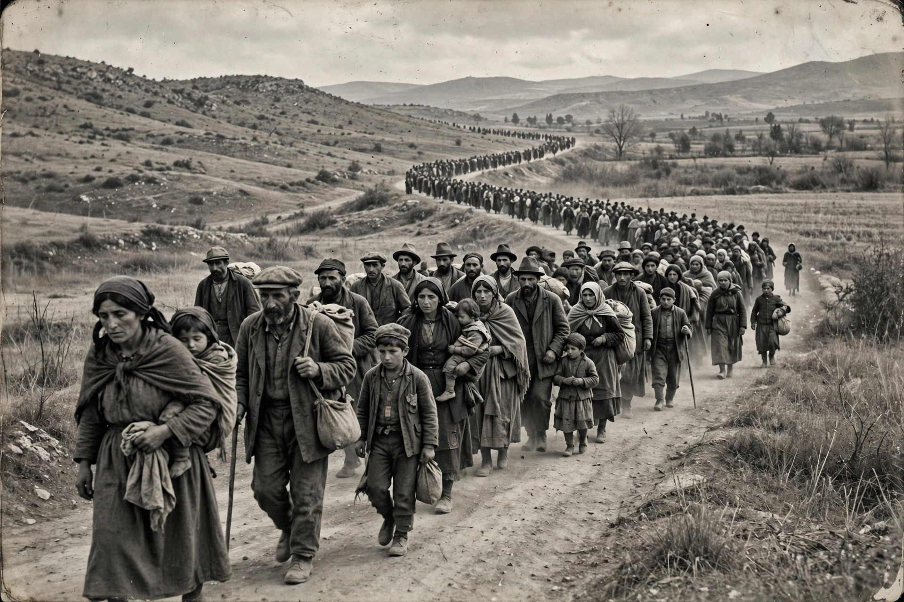

The Armenian genocide was the systematic destruction of the Armenian people and identity in the Ottoman Empire during World War I. Spearheaded by the ruling Committee of Union and Progress (CUP), it was implemented primarily through the mass murder of around one million Armenians during death marches to the Syrian desert and the forced Islamization of others, primarily women and children.

Armenians had lived in eastern Anatolia and the Armenian highlands for millennia and formed a substantial Christian minority in the Ottoman Empire. During the empire's decline in the nineteenth century, Armenians faced discrimination and periodic massacres, including the Hamidian massacres of the 1890s. Following the Young Turk Revolution of 1908, the CUP moved toward Turkish nationalism, and Ottoman entry into World War I on the side of the Central Powers provided the context in which the genocide unfolded.
The genocide is conventionally dated to 24 April 1915, when Ottoman authorities arrested and deported hundreds of Armenian intellectuals and community leaders from Constantinople. Armenian men serving in the Ottoman army were disarmed, placed in labour battalions, and murdered. The remaining population was deported on death marches toward the Syrian desert, accompanied by widespread massacres, starvation, and disease. Estimates of the death toll commonly range from around 600,000 to more than 1.2 million.
The events were widely documented by contemporary witnesses, including foreign diplomats and missionaries. The term genocide was coined by Raphael Lemkin in part with reference to the Armenian case. As of the 2020s, more than thirty countries, along with numerous legislatures and international bodies, have formally recognised the events as genocide; the United States did so in 2021. The Republic of Turkey, successor state to the Ottoman Empire, rejects the "genocide" characterisation, arguing that the deaths resulted from civil war, disease, and famine rather than a state plan of extermination. The overwhelming majority of historians regard the events as genocide.